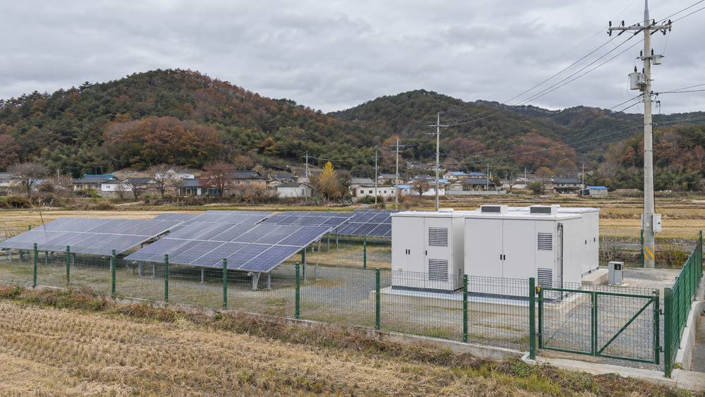

지역
전북도, 계통 포화 풀 ESS·가상발전소 사업모델 기업·한전과 논의

13일 도청 간담회에 LS일렉트릭 등 참석…햇빛소득마을 계통접속 문제도 다뤄
전북특별자치도가 11월 13일 도청에서 'ESS 및 전력망 연계 사업모델 발굴 간담회'를 열고, 전력망 용량이 차 새 재생에너지 설비가 접속하지 못하는 문제(계통 포화)의 해법을 기업·한국전력공사와 논의했다. 한전 전북본부와 한국전기안전공사 전기안전연구원, LS일렉트릭·티앤제이건설·세이브에너지·위에너지가 참석해 에너지저장장치(ESS)와 가상발전소(VPP, 흩어진 발전설비와 ESS를 하나의 발전원처럼 운영하는 방식)로 기존 전력망을 더 효율적으로 쓰는 방안을 다뤘다.
전북도는 햇빛소득마을을 추진하는 과정에서도 계통접속이 걸림돌이라고 설명했다. 이원택 전북특별자치도지사는 "재생에너지 확대를 위해서는 계통접속 문제 해결이 중요하다"고 말했다. 도는 기술·경제성 검토를 거쳐 실증사업과 정부 지원사업 연계를 찾고, 송·변전설비와 ESS 확충 과제를 국가계획에 반영하도록 건의할 계획이다.
기후에너지환경부는 6월 햇빛소득마을 ESS 사업 방식을 고쳐, 마을이 맡던 설치·운영비를 민간 VPP 사업자가 부담하도록 했다. 기후부와 한국에너지공단은 11월 10일 VPP 사업자 설명회를 열었다.
출처: 한국미디어뉴스 2026-11-13 이종철 원문 보기
출처: 기후에너지환경부 2026-11-11 주민주도 재생에너지 확산… 김성환 기후부 장관, 햇빛소득마을 현장 방문 원문 보기
시민이 만들고 지역이 소유하는 에너지 전환제4섹터 방식 시민주도 지역에너지 공공개발